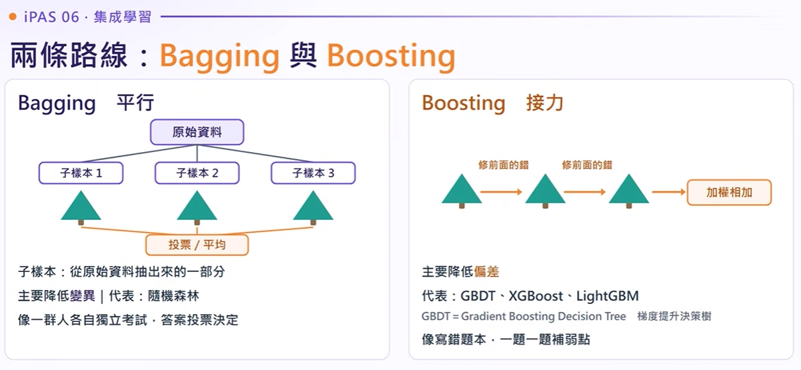
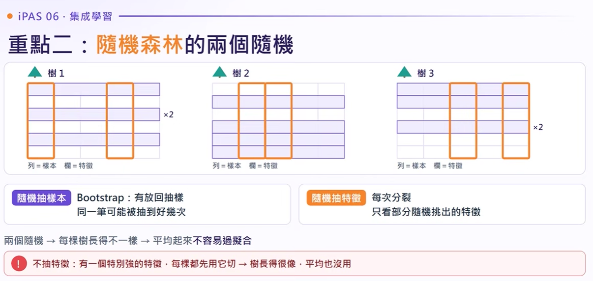
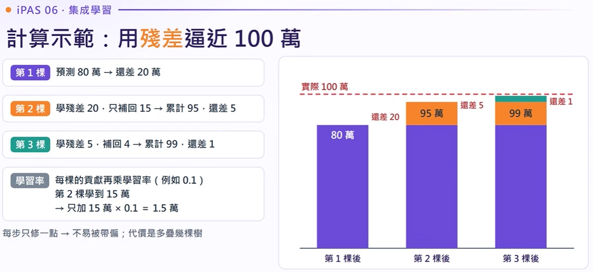
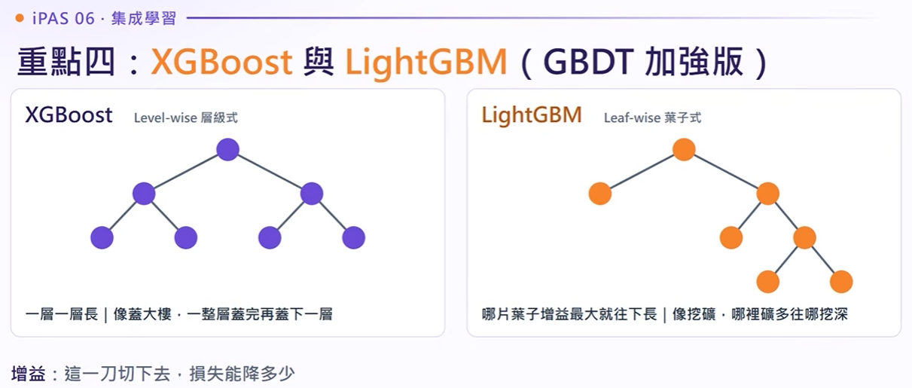
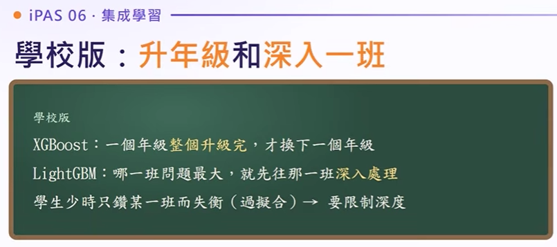
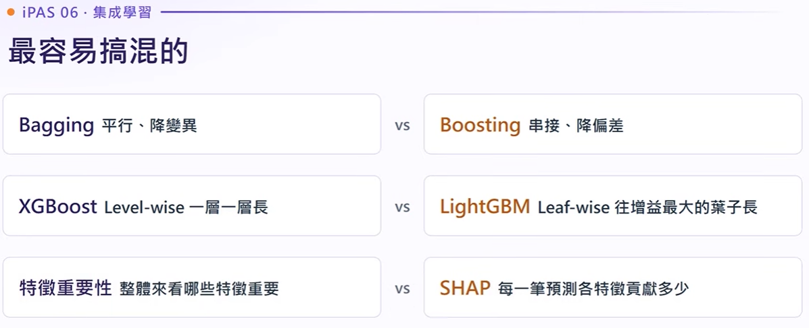

重點一：偏差 (Bias) 與 變異 (Variance) 的取捨
理解集成學習兩大架構前，必須先掌握的誤差核心本質
模型的總誤差 (Total Error) 構成
總誤差 = 偏差平方 (Bias²) + 變異 (Variance) + 不可避免之雜訊 (Noise)
模型太笨或過度簡化，抓不到資料真實趨勢。預測始終偏離真實目標（打不中紅心）。
👉 解方：使用 Boosting 逐步強化、降低偏差。
模型過於敏感複雜，把雜訊當特徵。換一份訓練資料預測結果就天翻地覆（散佈極度發散）。
👉 解方：使用 Bagging (如隨機森林) 取平均、抑制震盪。

重點二：Bagging 與 隨機森林 (Random Forest)
平行民主投票：藉由隨機抽樣讓多個過擬合弱樹互相抵消誤差
隨機森林為什麼不容易過擬合？
如果只訓練單棵深層決策樹，極易因死記雜訊而過擬合。隨機森林引入兩重隨機，讓每棵樹具備多樣性（Diversity）：
-
1
隨機抽樣本 (Bootstrap Aggregation)：
採「有放回抽樣」（Bootstrap），約有 63.2% 樣本被抽中，剩下 36.8% 未被抽中者稱為 OOB (Out-of-Bag) 袋外資料，可直接拿來做自驗證！
-
2
隨機挑特徵 (Feature Subsampling)：
每個分叉節點只隨機挑選一部份特徵（例如 $k = \sqrt{D}$），避免單一強特徵主導整座森林，讓不同特徵都有發揮空間。
如何衡量特徵影響力？
隨機森林在每次節點切分時，計算該特徵讓資料的「不純度降低量」（如 Gini 不純度減少量或熵增益）。在所有樹中的降低量累加平均越高，該特徵越重要。
隨機森林雖然不需特徵標準化，但其如同黑箱（Black-box），無法輸出單一易讀的判斷規則；若要解釋單一筆保險顧客為何被拒保，需外接 SHAP (Shapley Additive Explanations) 分析。

重點三：梯度提升 (Gradient Boosting) 與殘差迭代
串行補救教學：每一棵樹都在訂正上一棒留下來的「殘差 (Residual)」
真實房價逼近互動模擬器
真實房價目標：100 萬元｜初始基準預測：80 萬元
負梯度方向在 MSE 損失下恰好等於真實值與預測值的差額 $(y - \hat{y})$。
🛡️ Boosting 過擬合防禦四重奏（考點密碼）：
1. 早停機制 (Early Stopping)： 監控驗證集誤差，當多個輪次不再進步時立即終止，避免樹過多學到雜訊。
2. 降低學習率 (Shrinkage)： 與更多樹搭配（步子小、更穩健）。
3. 樹深度剪枝 (Max Depth)： GBDT 的弱樹通常只需深度 3~6，限制模型容量。
4. 子樣本採樣 (Subsample)： 每棵樹隨機抽 70%~80% 樣本訓練（Stochastic Gradient Boosting）。

重點四：XGBoost 與 LightGBM 現代進化論
工業界與競賽常勝軍：演算法層面的顛覆式改進
樹的生長模式比較：Level-wise vs Leaf-wise
點擊按鈕一步一步看兩種決策樹如何向下展開分裂
同一層的所有節點都分裂完畢，才會進到下一層。較不易過擬合，但對增益極低的葉子也會強行分裂，浪費算力。
每次只找當前分裂增益（Gain）最大的一片葉子向下深挖，極端高效！但資料量太小時容易長得過深導致過擬合（需設 max_depth）。
二階泰勒展開
傳統 GBDT 僅使用一階導數（梯度）；XGBoost 引入一階梯度 $g_i$ 與二階海森矩陣 $h_i$ 精確預估最優葉權重與分裂步長。
正則化懲罰項 (L1/L2)
在目標函數直接加入對「葉節點數量 $T$」與「葉權重大小 $w$」的懲罰：$\gamma T + \frac{1}{2}\lambda \sum w_j^2$，天生具備防過擬合能力！
特徵分裂並行化
雖然「樹與樹之間必須串行（依賴前一棵的殘差）」，但在「尋找同一節點的最佳特徵分割點」時，可以多執行緒並行計算！
自動處理缺失值 (Sparsity)
訓練時會自動測試把空值分到左子樹或右子樹，哪邊增益大就定為預設分流方向，省去手動補值的煩惱。


重點五：四強綜合對比與 iPAS 實戰模擬試題
考前總複習：表格速記與高頻考點直擊
| 演算法模型 | 架構本質 | 主要目標 | 基學習器關係 | 核心優勢與關鍵特性 |
|---|---|---|---|---|
| 隨機森林 (Random Forest) | Bagging | 降低變異 (Variance) | 獨立平行訓練、深度較深 | 雙重隨機（樣本+特徵）、OOB 自評估、特徵重要性分析 |
| 梯度提升樹 (GBDT) | Boosting | 降低偏差 (Bias) | 依序串行、擬合前一棒殘差 | 利用損失函數的一階負梯度，精確擬合複雜非線性表格資料 |
| XGBoost | Boosting | 降低偏差 + 防過擬合 | 串行訓練，同一樹特徵可並行 | 二階泰勒展開、目標函數正則化懲罰、自動處理空值、Level-wise 生長 |
| LightGBM | Boosting | 極速降低偏差 | 串行訓練、Leaf-wise 生長 | 直方圖演算法 (Histogram) 離散化連續特徵、記憶體消耗極低、速度超快 |
iPAS 考題情境模擬挑戰
傳統梯度提升決策樹（GBDT）在面對高維度與稀疏資料時常面臨過擬合與運算耗時的問題。與傳統 GBDT 相比，下列哪一項最能反映 XGBoost 所做的關鍵改進？
• XGBoost 依舊是 Boosting 決策樹，並非改用神經網路或隨機森林（排除 A 與 C）。
• XGBoost 的「並行化」是指在同一棵樹中尋找多個特徵的最佳切分點時並行，樹與樹之間仍然是串行的！
• 它在損失函數中加入葉節點數與葉權重的正則化懲罰項，並內建稀疏缺失值自動分流路線，這正是解答關鍵。
某 AI 工程師在訓練單一深層決策樹模型時，發現模型在訓練集上的準確率達到 99%，但驗證集準確率僅有 62%，呈現顯著的高變異（High Variance / 過擬合）。根據集成學習原理，他此時最應優先嘗試採用下列何種演算法架構來緩解此問題？
• 題目明確指出模型處於「高變異（過擬合）」狀態。
• Bagging 架構（如隨機森林）的核心目的正是「降低變異（Variance）」，藉由自助抽樣的多棵獨立樹取平均，能有效撫平單一樹的過度波動。
• 選項 B、C、D 都會加劇過擬合，不可選。
考場 30 秒記憶口訣

② 隨機森林靠「抽樣本 + 挑特徵」雙重隨機，讓每棵樹長得不一樣。
③ XGBoost 比 GBDT 多了目標函數正規化懲罰項，歷屆考題每回必考！
影片時間軸逐字稿與精讀導覽
EP06 專屬對照 YouTube 影音精準時間戳，支援逐字稿展開、語意高亮與即時關鍵字過濾
開場試題挑戰與章節全貌導覽
本集聚焦「集成學習」（Ensemble Learning）：將多個弱學習器（Weak Learners）組合成強學習器（Strong Learner），劃分為 Bagging 與 Boosting 兩大陣營。
重點一：Bagging 與 Boosting 的本質差異（偏差 vs 變異）
• 主要任務：降低變異（Variance）
• 特點：基學習器彼此獨立平行訓練，最後分類採投票、迴歸採平均。
• 生動比喻：多位名師獨立批改同一篇文章取平均成績，消弭個人偏見。
• 主要任務：降低偏差（Bias）
• 特點：弱模型依序串行生成，專攻前一棒留下的殘差錯誤。
• 生動比喻：名師接力補救教學，下一位老師針對學生上一題不會的錯題深入輔導。
重點二：隨機森林（雙重隨機機制與特徵重要性）
1. 隨機抽樣本：採用 Bootstrap（有放回抽樣），約 36.8% 樣本為 OOB（袋外樣本），自然提供無需 cross-validation 的無偏驗證。
2. 隨機挑特徵：節點分裂時只挑選隨機子集合特徵，防止單一強特徵主導整棵樹。
重點三：梯度提升（Gradient Boosting）殘差下山與過擬合對策
以均方誤差為損失函數時，負梯度恰好就是真實值減去當前預測值的「殘差（Residual）」。下一棵樹不預測真實標籤，而是專門預測這筆殘差。
• 房價真實值 100 萬，第一棵樹預測 80 萬（殘差 20 萬）；第二棵樹擬合 20 萬但乘以學習率 $\eta = 0.1$，僅更新 2 萬，預測變成 82 萬。
重點四：XGBoost 與 LightGBM 的技術革新與生長模式
• 目標函數正則化：懲罰葉數量與葉權重，內建防過擬合。
• 並行特徵分裂：同一樹的分裂點預排序並行計算。
• Level-wise 生長：層次對稱擴展。
• 直方圖演算法 (Histogram)：把連續特徵切成多個桶位，記憶體消耗極低，超適合百萬級大數據。
歷屆考題深度剖析與防坑指南
正確解答為：「在目標函數中引入正則化抑制過擬合，並支援缺失值自動處理與並行特徵分裂」。
• 陷阱 1：「改用神經網路擬合殘差」❌（錯！XGBoost 基底依然是決策樹）。
• 陷阱 2：「多棵樹平行生成訓練」❌（錯！Boosting 的核心哲學是依賴前一棵樹的殘差，因此樹之間絕對無法平行）。
結尾：30 秒快速口訣總整理
① Bagging 民主投票降變異；Boosting 訂正錯題降偏差。
② 隨機森林靠「抽樣本 + 挑特徵」雙重隨機杜絕獨裁樹。
③ XGBoost 超越 GBDT 關鍵：二階導數算步長、目標正則防過擬、特徵切分並行化。
找不到符合該關鍵字的逐字稿段落，請嘗試更換搜尋詞